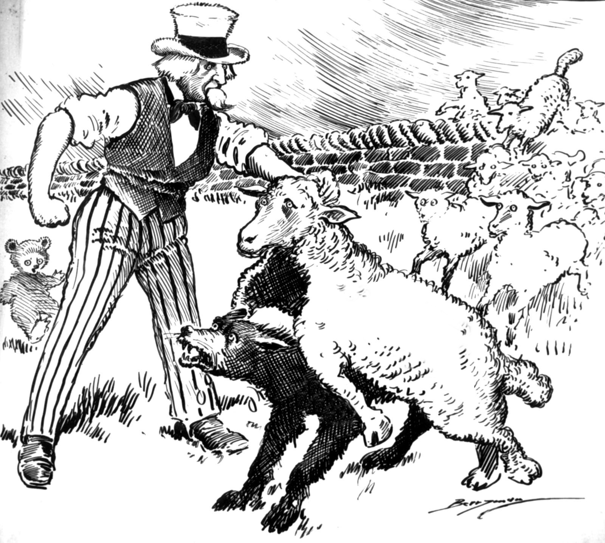
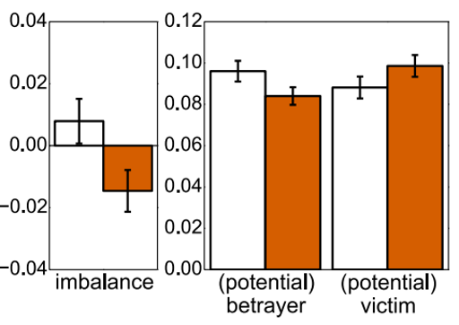
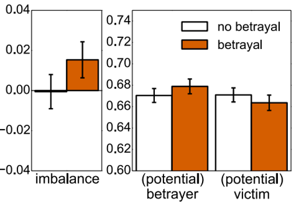
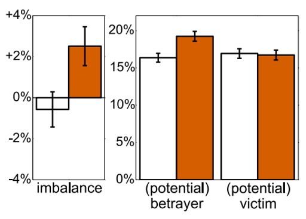
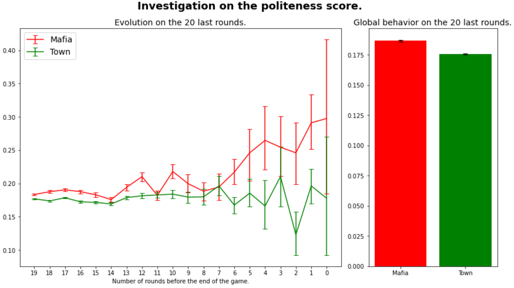
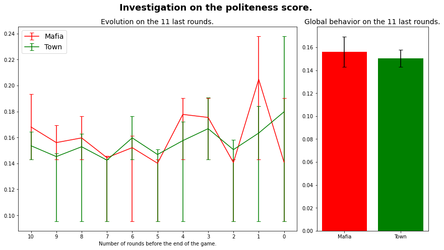
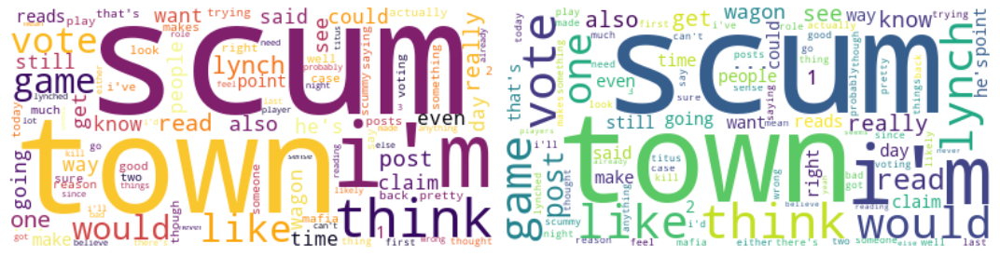
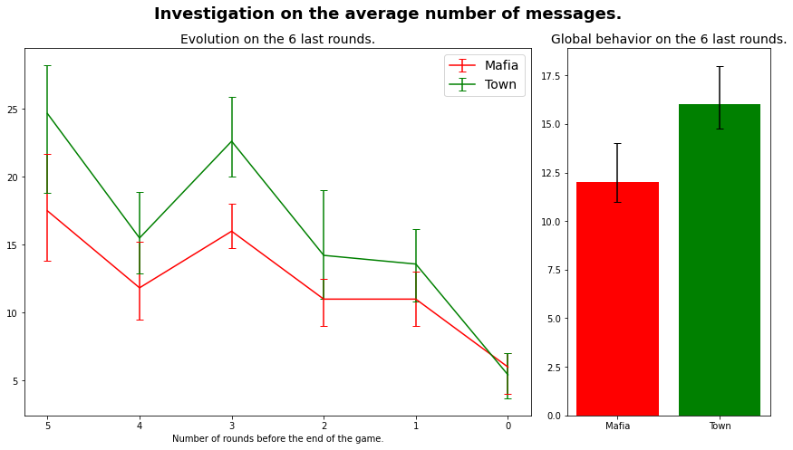
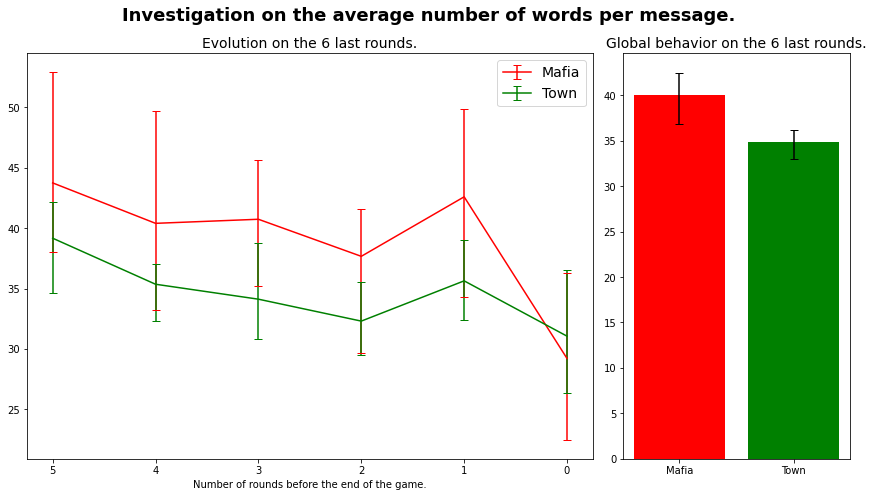
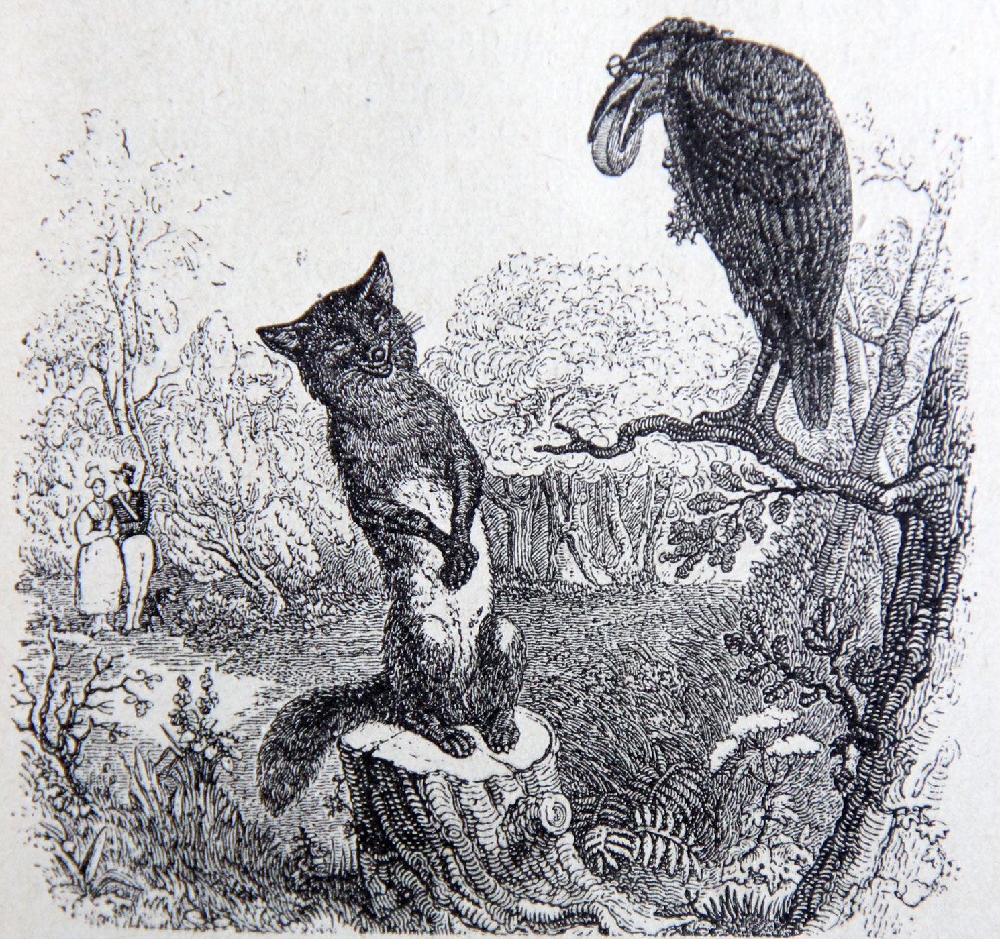

Information is power
Regardless of the type of interaction carried out, anyone with more information than their interlocutor will be able to enjoy a clear advantage over the latter. This is particularly the case at the heart of strategy games or exchanges, based on human-to-human interactions. Having more information on the strategies, roles or actions of your colleagues allows you to gain a strategic advantage over them, and to lead them to their loss, to your advantage.
"Ipsa Scientia Potestas Est" (knowledge itself is power). Sir Francis Bacon. Meditationes Sacrae (1597). "A Wolf in Sheep's Clothing", 1920, modified. (source)
Here we are interested in the study of language clues within social deduction games, to see if it is possible to use language clues to determine the roles of different people within a game. To do so, we have carried out an analysis of [Niculae et al., 2015] and it enabled us to highlight certain clues of language linked to the imminence of betrayal. We would like to apply similar techniques to detect betrayal in social deduction games, like Town of Salem, Secret Hitler, Among Us or Werewolf/Mafia. Is it possible, by studying the public exchanges of the players during a textual game, to spot the "traitor"? The major difference with the basic article is that we are not looking for a betrayal to come - the breaking of a friendship - but a betrayal that has already taken place - for instance, the "wolf" seeks to win by posing as a "villager". As such, we are going to analyse textual exchanges of different games, and try to apply the same methods to multiple sessions.
What is a social deduction game?
Social deduction games have recently regained popularity with the game Among Us, but have long been present in the heart of players, with variants such as Werewolf, Tower of Salem, or Secret Hitler. Originally a Soviet social experiment created in 1986, the principle of these games is simple: an informed minority (we'll talk about “betrayers”) is against a uninformed majority (we'll talk about "victims"). The betrayers are aware of the roles of all the players, and will try to eliminate the victims, while the victims have to find out who is a betrayer in order to eliminate them.
GLAM wiki 2018 conference (Tel Aviv, Israel) participants playing Werewolf on the hotel terrace. (source)Social deduction games have been adapted to video games on numerous occasions through mods or full games, including Garry's Trouble in Terrorist Town, Town of Salem, or Among Us. This makes it easier to study games in the context of research on natural language processing, and particularly on anything related to deception.
An important element of strategy in some social deduction games is to determine how long to stick to one's story in light of information obtained from other players. Indeed, the only weapon of the different players remains listening and analysis, and the coherence of what is said from person to person. It is particularly true that honesty takes precedence over the players, and makes it easy to "camouflage" attentions.
The case of Diplomacy
Diplomacy is a board game created by the American Allan B. Calhamer, a historical simulation and negotiation game with the theme of Europe at the beginning of the 20th century. It is a war-themed strategy game where friendships and betrayals are orchestrated mainly through language. Diplomacy, like the prisoner's dilemma, is a repetitive game where players choose to cooperate or betray other players. In the course of negotiations, players forge or break alliances and then give orders to their military units. The game continues until one country controls more than half of the continent (symbolised by the control of eighteen of the thirty-four centres on the map) or, if necessary, by agreement between the remaining players. It is also possible, before starting a game, to arbitrarily set a maximum duration in game rounds or time.
A Diplomacy tabletop.The paper [Niculae et al., 2015] takes advantage of an online version of the Diplomacy game, made on a forum. Internet or telephone applications are particularly well suited to Diplomacy and have replaced the postal correspondence game. Negotiations take place by e-mail or directly on the sites or applications. The paper has extracted parts of this forum, in order to study them, to assimilate characteristics specific to betrayers and victims.
 Imbalance of plannign between betrayers and victims. (source)  Imbalance of politeness between betrayers and victims. (source)  Imbalance of positive sentiment between betrayers and victims. (source)We thus wished to go further: is it possible to apply the same techniques for analysing language clues to games where the betrayal is not punctual, but long? Is it possible to identify betrayal on a "long term" basis, i.e. deception (vs. in the article on a specific point in time)? What are the clues to identify "traitors" in social deduction games? The methodology is the same than in [Niculae et al., 2015] parts 4.2 and 4.3, but, due to lack of time, we decided to focus only on politeness and talkativeness.
- Politeness: Politeness measurement of each message using the Stanford Politeness classifier through ConvoKit from Cornell.(ibidem) - using CovoKit toolkit.
- Talkativeness: Number of messages sent, average number of sentences per message, average number of words per sentence.
Long-term betrayer
The game Among Us is very successful on some internet forums. In the online variant of the game, the game takes place in a designated topic ("thread"), the players receive their role by private message, and the mafia can consult each other at night in a forum known only to them. Internet gaming allows for extremely free and in some cases very complicated variants. Factions can multiply, the number of players can be as many as 25, and the best mafia consultation makes them stronger by nature: it is also more difficult to guess if someone is lying only through a paper trail. On the other hand, as all messages are available for consultation throughout the game, it is much easier to unmask contradictions. Max Ventilla, former CEO of Aardvark (Google), states that "If the villagers are allowed to keep a pencil and paper, they always win". An Internet mafia game can last from a few days to several weeks, depending on the pace imposed by the game leader, the players' attendance and how often they use the forum.

The Mafiascum Dataset is a collection of over 700 games of Mafia played on an Internet forum. The interactions between players are scraped from this plateform. The data repository consists of several JSon files that contain different informations about each game and each player and messages, and are divided as follow:
- Files with suffix
gamesincludes general identifier of the games, e.g.id,title,moderator, or number of posts. - Files with suffix
slotscontains informations about the players such as the id of the game in which they took part, their role, and how their game ended (eg. "lynched Day 2", "died Night 5" or "survives"). - Files without specific suffix gather all textual interactions, their authors as well as the id of the games, and the index of the post within the game (random examples of messages: "i don't wanna be a chicken i don't wanna be a duck", "Also, Egg - I don't particularly find the peacemaker routine a town-thing generally.").
Not as noble as it seems
As seen on the graph, our wolves are quite polite, maybe too polite ... To human eyes, it seems like politeness scores seems about the same, somewhat even slightly higher than our sheeps. After having run a t-test, we obtained a p-value of 2.10-108. This value is extremely low and shows a significant difference in politeness scores between mafia scums and all towners, meaning that they mafia scums are significantly more polite than all towners. This p-value is, of course, due to the size of our dataset, which also means that our analysis is based on solid evidences.
This corroborates the paper on Diplomacy, since it has also shown the tendancy for betrayers to be more polite than victims.
Much talking is the cause of danger
   Every flatterer lives at the expense of the one who listens to him.
Our study is based on the analysis of written texts, but of course many other parameters have to be taken into account, such as the experience of the players, their past interaction with other members of the party, or their non-verbal language. Nevertheless, here we have some interesting clues on the analysis of deception: every flatterer lives at the expense of the one who listens to him.
 The Raven and the Fox. (source)References
- [Danescu-Niculescu-Mizil et al., 2013]: Cristian Danescu-Niculescu-Mizil, Moritz Sudhof, Dan Jurafsky, Jure Leskovec, Christopher Potts, A computational approach to politeness with application to social factors, ACL, 2013. Original paper.
- [Niculae et al., 2015]: Vlad Niculae, Srijan Kumar, Jordan Boyd-Graber, Cristian Danescu-Niculescu-Mizil, Linguistic Harbingers of Betrayal: A Case Study on an Online Strategy Game, Proceedings of ACL, 2015. Original paper, website.
- [Prasad et al., 2008]: Rashmi Prasad, Nikhil Dinesh, Alan Lee, Eleni Miltsakaki, Livio Robaldo, Aravind Joshi, Bonnie Webber, The Penn Discourse TreeBank 2.0, LREC, 2008. Original paper.
- [de Ruiter et al., 2018]: Bob de Ruiter, George Kachergis, The Mafiascum Dataset: A Large Text Corpus for Deception Detection, 2018. Original paper.
- [Socher et al., 2013]: Richard Socher, Alex Perelygin, Jean Wu, Jason Chuang, Christopher Manning, Andrew Ng, Christopher Potts, Recursive Deep Models for Semantic Compositionality Over a Sentiment Treebank, EMNLP, 2013. Original paper, website.
- [Stab et al., 2014]: Christian Stab, Iryna Gurevych, Identifying Argumentative Discourse Structures in Persuasive Essay, EMNLP, 2014. Original paper.
- Town of Salem: Official website, Wikipedia, Fandom.
- Secret Hitler: Official website, Wikipedia.
- Among Us: Official website, Wikipedia.
- Werewolf/Mafia: Wikipedia), Telegram game official website.
- ConvKit: Cornell Conversational Analysis Toolkit. Website.
- Stanford NLP Group: Website.